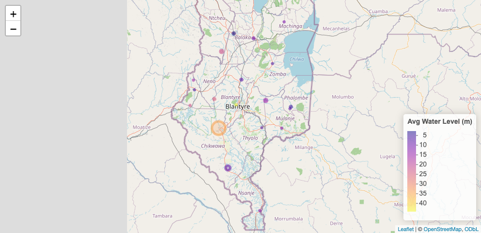

This dataset contains groundwater monitoring data collected from monitoring wells across 9 districts in Malawi between 2024 and 2025. The data were captured using automated data loggers installed in monitoring wells and were collected and managed by BASEflow.
The dataset provides time-series measurements of key groundwater parameters, enabling detailed analysis of aquifer behavior across multiple geographic locations.
Variables Included
Date – Date of measurement
Waterpoint Name – Name of the monitoring site
District – Administrative district where the monitoring well is located
Latitude & Longitude – Geographic coordinates of the monitoring well
Source – Data collection method (automated data logger)
Water Level – Groundwater level measurement (typically meters below ground level, depending on installation reference)
Temperature – Groundwater temperature (°C)
Conductivity – Electrical conductivity (µS/cm), indicating dissolved ion concentration and groundwater quality characteristics
The use of automated loggers ensures high-frequency, consistent, and reliable measurements suitable for time-series analysis and hydrogeological assessment.
- Purpose and Use Cases 1. Groundwater Resource Monitoring
Tracking spatial and temporal groundwater level variations across districts
Assessing seasonal recharge and depletion patterns
Identifying long-term aquifer trends
- Water Quality Surveillance
Monitoring conductivity trends as a proxy for salinity and mineralization
Detecting potential contamination or quality shifts
- Climate and Drought Analysis
Supporting drought early warning systems
Evaluating groundwater resilience to climate variability
- Infrastructure Management
Informing borehole design and pump installation depths
Supporting preventive maintenance planning
Assessing borehole performance over time
- Hydrogeological Research and Modelling
Input data for groundwater flow and recharge models
Calibration of aquifer simulations
Comparative inter-district hydrogeological analysis
- Policy, Regulation, and Planning
Evidence base for district-level and national water resource planning
Supporting groundwater abstraction regulation
Informing investment decisions in rural and urban water supply
Potential Users
Ministry responsible for Water and district water offices
Hydrologists and hydrogeologists
WASH sector NGOs and implementing partners
Academic and research institutions
Climate and environmental analysts
Development partners supporting water security and resilience programs
This dataset provides a structured, multi-district groundwater evidence base to support sustainable groundwater management and water security planning in Malawi.
Installation
You can install the development version of mwgroundwaterdata from GitHub with:
# install.packages("devtools")
devtools::install_github("openwashdata/mwgroundwaterdata")
## Run the following code in console if you don't have the packages
## install.packages(c("dplyr", "knitr", "readr", "stringr", "gt", "kableExtra"))
library(dplyr)
library(knitr)
library(readr)
library(stringr)
library(gt)
library(kableExtra)Alternatively, you can download the individual datasets as a CSV or XLSX file from the table below.
- Click Download CSV. A window opens that displays the CSV in your browser.
- Right-click anywhere inside the window and select “Save Page As…”.
- Save the file in a folder of your choice.
| dataset | CSV | XLSX |
|---|---|---|
| mwgroundwaterdata | Download CSV | Download XLSX |
Data
The package provides access to This dataset contains groundwater monitoring data collected from monitoring wells across 9 districts in Malawi between 2024 and 2025. The data were captured using automated data loggers installed in monitoring wells and were collected and managed by BASEflow.
metadata
The dataset mwgroundwaterdata contains 1415 observations and 9 variables
mwgroundwaterdata |>
head(3) |>
gt::gt() |>
gt::as_raw_html()| date | waterpoint_name | district | latitude | longitude | source | water_level | temperature | conductivity |
|---|---|---|---|---|---|---|---|---|
For an overview of the variable names, see the following table.
| variable_name | variable_type | description |
|---|---|---|
| date | character | Date when data was captured |
| waterpoint_name | character | The name of the water point |
| district | character | Administrative district the water point is located |
| latitude | numeric | GPS latitude coordinate |
| longitude | numeric | GPS longitude coordinate |
| source | character | The device that captured the information |
| water_level | numeric | Water level of the water |
| temperature | numeric | Temperature of the data |
| conductivity | numeric | Electical conductivity of the water |
Example
library(mwgroundwaterdata)
# Visualization: Geospatial Map
# Import the libraries to be used
library(tidyverse)
library(lubridate)
library(leaflet)
# Create summary dataset INSIDE the README
well_summary <- mwgroundwaterdata %>%
group_by(waterpoint_name, latitude, longitude, district) %>%
summarise(
avg_water_level = mean(water_level, na.rm = TRUE),
avg_conductivity = mean(conductivity, na.rm = TRUE),
.groups = "drop"
)
leaflet(well_summary) %>%
addTiles() %>% # OpenStreetMap tiles
addCircleMarkers(~longitude, ~latitude,
radius = ~avg_conductivity/400,
color = ~colorNumeric("plasma", avg_water_level)(avg_water_level),
popup = ~paste0(waterpoint_name, "<br>Avg Water Level: ", round(avg_water_level,2),
"<br>Avg Conductivity: ", round(avg_conductivity,1))) %>%
addLegend("bottomright",
pal = colorNumeric("plasma", well_summary$avg_water_level),
values = well_summary$avg_water_level,
title = "Avg Water Level (m)")
License
Data are available as CC-BY.
Citation
Please cite this package using:
citation("mwgroundwaterdata")
#> To cite package 'mwgroundwaterdata' in publications use:
#>
#> Mhango E (2026). "mwgroundwaterdata: Malawi Groundwater Monitoring
#> Time-Series Dataset (2024–2025)." doi:10.5281/zenodo.18798409
#> <https://doi.org/10.5281/zenodo.18798409>.
#> <https://github.com/openwashdata/mwgroundwaterdata>.
#>
#> A BibTeX entry for LaTeX users is
#>
#> @Misc{mhango:2026,
#> title = {mwgroundwaterdata: Malawi Groundwater Monitoring Time-Series Dataset (2024–2025)},
#> author = {Emmanuel Mhango},
#> year = {2026},
#> doi = {10.5281/zenodo.18798409},
#> url = {https://github.com/openwashdata/mwgroundwaterdata},
#> abstract = {This dataset contains groundwater monitoring data collected from monitoring wells across 9 districts in Malawi between 2024 and 2025. The data were captured using automated data loggers installed in monitoring wells and were collected and managed by BASEflow. The dataset provides time-series measurements of key groundwater parameters, enabling detailed analysis of aquifer behavior across multiple geographic locations.},
#> keywords = {open data,washdata,groundwater,groundwater monitoring,water level,water quality,Malawi,sanitation,wash,water,watermonitoring},
#> version = {0.0.2},
#> }